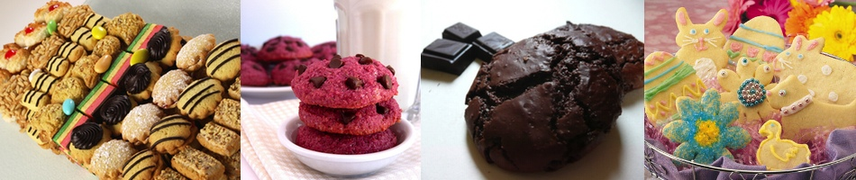

Kjeks
Kjeks finnes, som de fleste andre bakeverk, i svært mange størrelser, fasonger og farger. Opprinnelig ble kjeks laget tørre slik at de var holdbare over lengre tidsperioder. De var derfor godt egnet som mat på lange reiser.
Nå for tiden lager man kjeksen mer for smakens skyld, enn nytteverdien. Dermed finnes et stort utvalg av kjeks, da folk har ulike preferanser når det gjelder smak og innhold.
